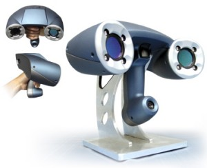
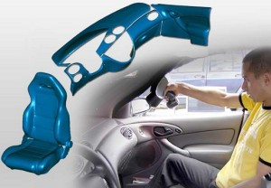

| |
|
|
DÜNYANIN
ÝLK ELDE TAÞINIR ve TEK BAÞINA POZÝSYONLANDIRILABÝLÝR
LAZER TARAYICISI HANDYSCAN 3D, MUSTEK ÝLE TÜRKÝYE'DE:
3D
Dijital teknolojisi; medikal endüstri, otomotiv, uçak
sanayi , taþýmacýlýk endüstrisi, multimedya alanlarýnda
geliþiyor...
Handyscan;
ilk, elde taþýnýr ve tek baþýna pozisyonladýrýlabilir
tarayýcýyý yaptý. 3 boyutlu tarama teknolojisindeki
bu atýlým, tersine mühendislik, 3 boyutlu ölçüm, 3 boyutlu
tarama ve modellemede geleceði þekillendirecek.
ÞAÞIRTICI
FÝYAT!
|

|
|
ÖZELLÝKLERÝ:
- Hassas,
hýzlý, portatif ve kullanýmý kolay.
- Uygun
fiyat; Ölçme koluna veya ölçme makinesine ihtiyaç
duymaz
- FireWire
baðlantý portu
- Yüksek
çözünürlüklü kamera
- Zararsýz
laser ýþýný
- Yansýtýcý
hedefler veya projektör
- Kalibrasyon
imkaný
- Ergonomik
dizayn
|

|
UYGULAMALAR:
Tersine
mühendislik, Dizayn & imalat, Muayene & ölçüm, Dijital
model & simulasyon, Medikal uygulamalar, Multimedya, Sanat
& Müzeler...
VXSCAN
TARAMA YAZILIMI:
- Kullanýmý
kolay veri yakalama yazýlýmý
- Tak-kullan
sistemi
- Gerçek
zamanlý 3 boyutlu görüntüleme
- Standart
formatlarda dosya transferi
- Izgaralama
optimizasyonu
- Otomatik
sensor kalibrasyonu
- Yüzey
optimizasyon algoritmasý
- Microsoft
Windows ile uyumlu
CÝHAZ
ÝLE ÝLGÝLÝ AYRINTILI BÝLGÝ ve TARAMA HÝZMETLERÝMÝZ
ÝÇÝN LÜTFEN ARAYINIZ.
|